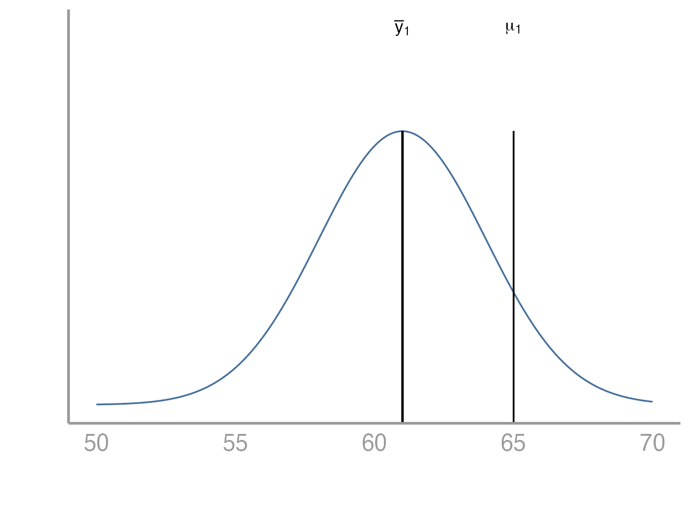
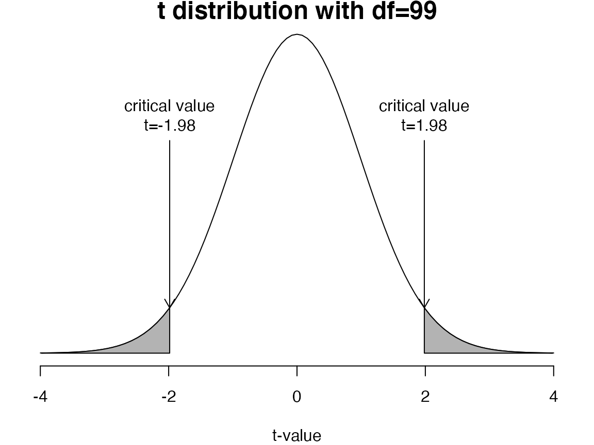
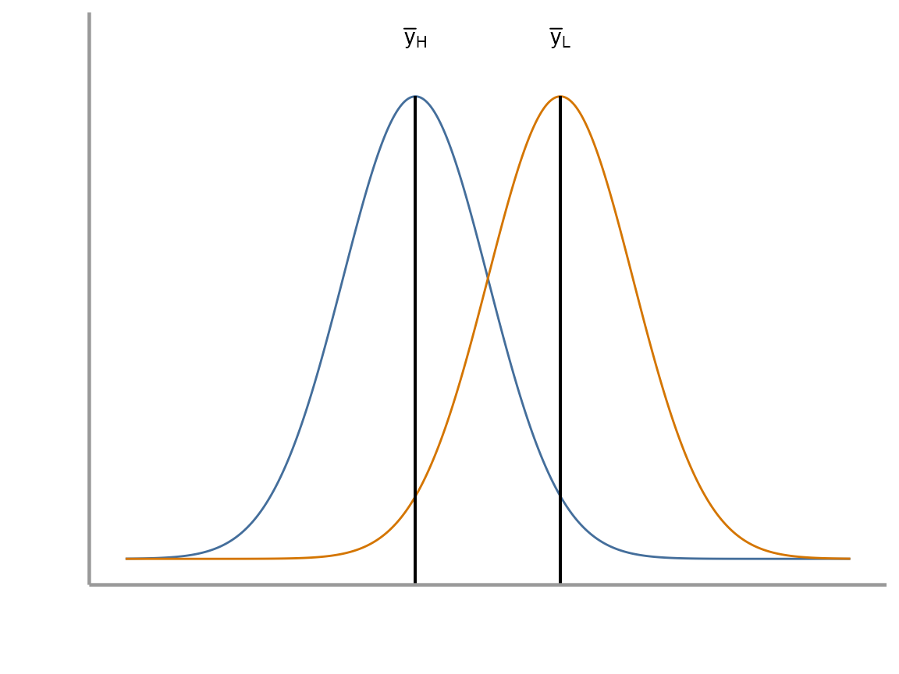
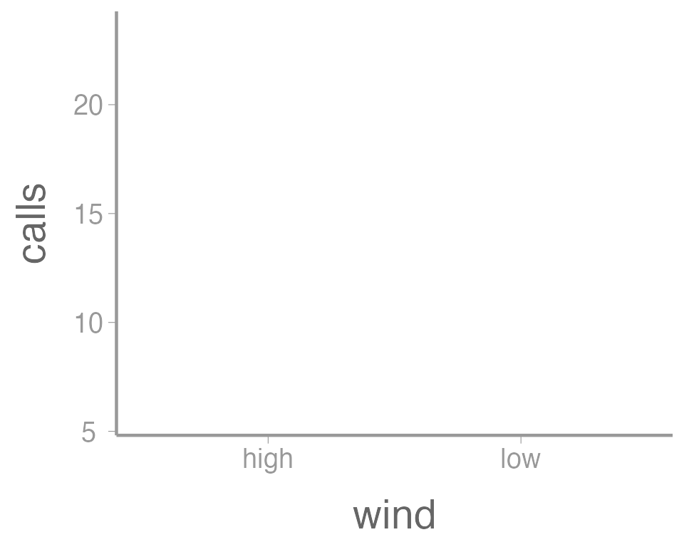
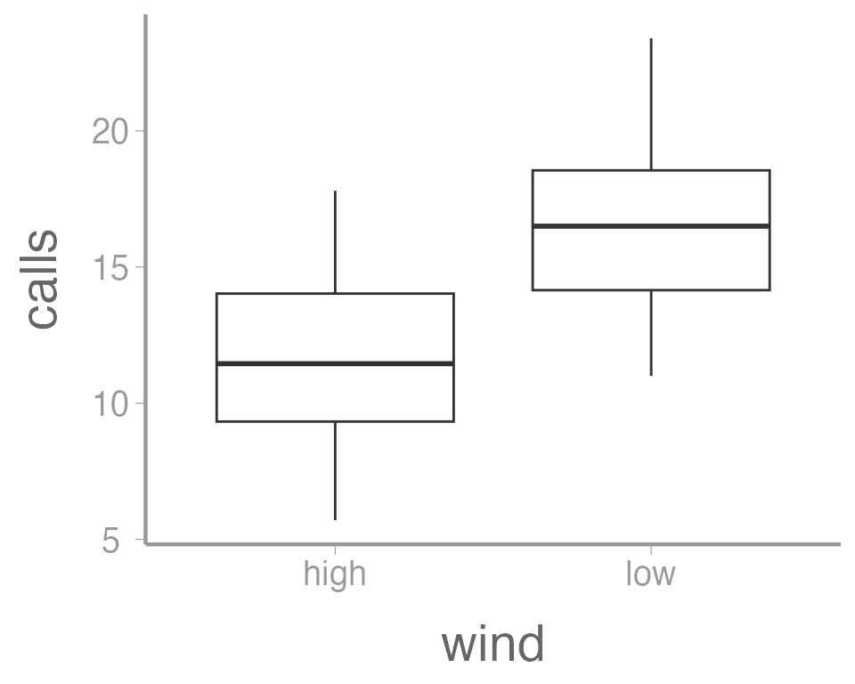
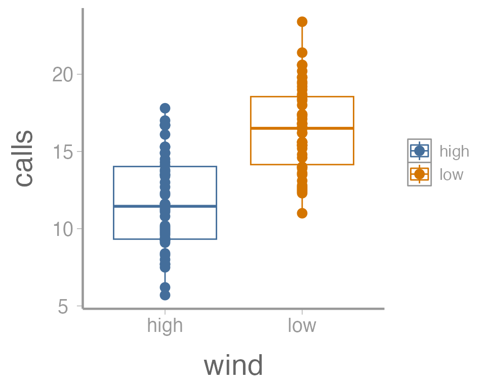
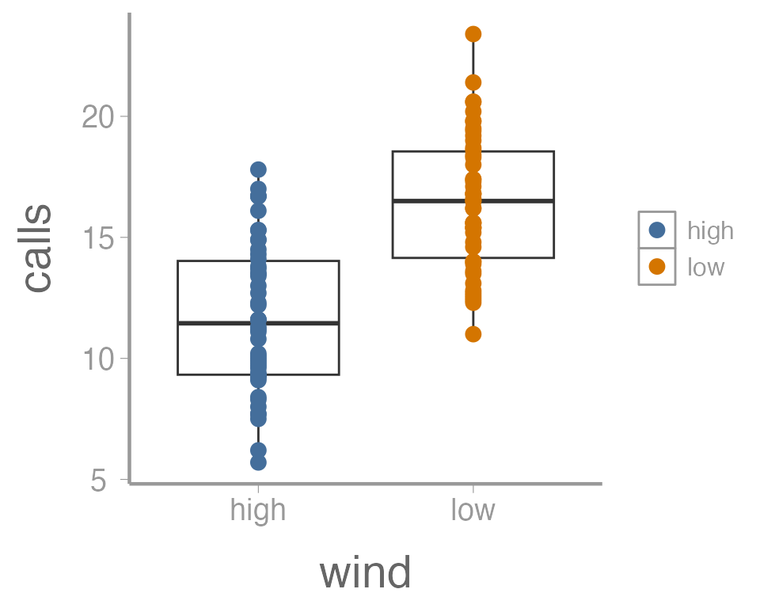
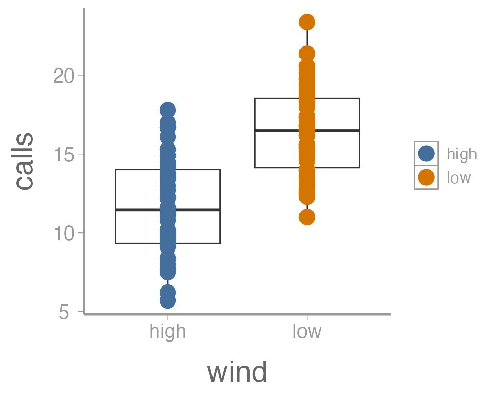
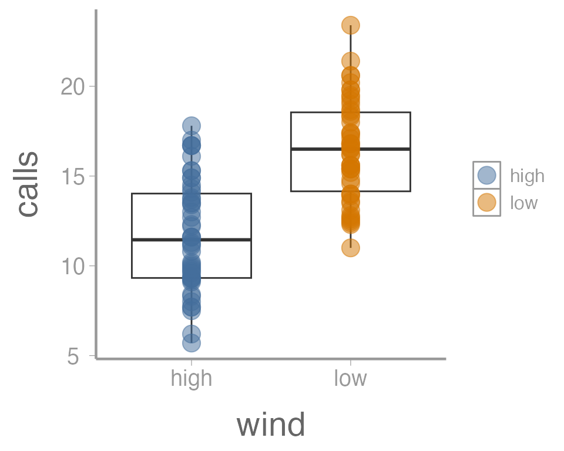

Lab 3: Linear models with one categorical predictor– t-tests
FANR 6750: Experimental Methods in Forestry and Natural Resources Research
Fall 2023
lab03_t-tests.RmdToday’s topics
Introduction
-
Linear models with one categorical predictor: t-tests
One sample
Samples vs tails
Two sample
Graphics Review
Paired
Introduction
Today we will discuss a range of scenarios which broadly fall under the category of t-tests. These will include:
when a sample mean is being compared to a particular value (one-sample t-test)
when two sample means are being compared to each other and the observations between samples are independent (two-sample t-test)
when two sample means are being compared to each other and the observations between samples are paired (paired t-test)
Scenario 1: One sample t-tests
For now, we will talk about the scenario in which we only have one sample of data and we are interested in its mean.
Question: Is the average height of students at UGA equal to 65 inches?
Problem: We don’t know the true population mean (\(\mu_1\)). All we have is the sample mean (\(\bar{y}_1\)).
-
The relevant hypotheses are:
\(H_0 : \mu_1 = 65\)
\(H_A : \mu_1 \neq 65\)
Suppose we have collected a random sample of 100 students. Below is a plot of the distribution of their heights. In this case the sample mean is 61 inches. From the plot below, it would be difficult to conclude one way or another whether the population mean is equal to 65.

We can think about this problem in a few different ways. Below we will see how to approach it both from the perspective of a linear model as well as from the perspective of a test. Remember that in our linear model below we are interested in estimating \(\beta_0\) which in this very simple case just represents the population mean.
\[ y_i = \beta_0 + \epsilon_i \ \ \ \ \ \text{where} \ \ \ \ \ \epsilon_i \sim \text{N}(0,\sigma) \]
Key points
If the sample mean (\(\bar{y}_1\)) is very different from the proposed population mean and the standard error of the difference is small, the \(t\)-statistic will be far from zero
If the \(t\)-statistic is more extreme than the critical values, we reject the null hypothesis (\(H_0\))

Exercise 1
Formulation as a linear model
Open your
FANR6750RStudio project (if you have one)Create a new
Rscript and save it to the directory where you store you lab activities. Name it something likelab04-t_tests.RLoad the
FANR6750package and thestudentsdataobject
library(FANR6750)
data("studentsdata")- Create an object
studentswhich is the vector in thestudentsdatadataframe.
students <- studentsdata$students- Fit a linear model to this dataset.
mod1 <- lm(students - 65 ~ 1)
summary(mod1)
#>
#> Call:
#> lm(formula = students - 65 ~ 1)
#>
#> Residuals:
#> Min 1Q Median 3Q Max
#> -10.406 -2.181 -0.156 1.819 7.794
#>
#> Coefficients:
#> Estimate Std. Error t value Pr(>|t|)
#> (Intercept) -3.594 0.321 -11.2 <2e-16 ***
#> ---
#> Signif. codes: 0 '***' 0.001 '**' 0.01 '*' 0.05 '.' 0.1 ' ' 1
#>
#> Residual standard error: 3.21 on 99 degrees of freedomA few things to think about here:
Why did we include the
- 65in the model statement?What does the
~ 1represent?What does the intercept value mean?
What do we conclude from this model and p-value?
Formulation as a t-test by hand
Now that we have seen how R can create a linear model to help us answer the question about the population mean, we will dive deeper into what exactly the computer is doing. How exactly did it decide to reject the null hypothesis? How did it calculate the p-value? Where did it get those numbers?
We know from lecture that the formula to get a test statistic for a one sample test is the following:
\[ t = \frac{\bar{y} - \mu_0}{SEM} \ \ \ \ \ \text{where} \ \ \ \ \ SEM = \frac{s}{\sqrt{n}} = \frac{\sqrt{\frac{1}{n-1}\sum^n_{i=1}(y_i - \bar{y})^2}}{\sqrt{n}} \] While this looks like a lot, we can break it into pieces as lines of code in R.
- Create an object which is the sample mean.
y_bar <- mean(students)- Create an object which is the standard error
- Put these together to calculate the test statistic
t_stat <- (y_bar - 65)/se_yNow that we have a test statistic, we need to calculate a critical value for comparison.
- Calculate the critical values
Notice that the results are the same as when we used the
lm() function.
Formulation as a t-test using the built in R function
- Use the built in
Rfunctiont.test().
t.test(students, mu= 65, alternative= 'two.sided', conf.level= 0.95)
#>
#> One Sample t-test
#>
#> data: students
#> t = -11, df = 99, p-value <2e-16
#> alternative hypothesis: true mean is not equal to 65
#> 95 percent confidence interval:
#> 60.77 62.04
#> sample estimates:
#> mean of x
#> 61.41Samples vs Tails
Before we go any further, lets address an issue that many students find confusing about t-tests. This is the issue of samples vs tails. What does it mean when we talk about a ‘one sample t-test vs a two sample t-test’? What does it mean when we say a t-test had ‘one tail or two tails’?
Samples: The number of samples (one or two) has to do with the data that you are using to approach the research question. If you are comparing one sample to a specific value (e.g. \(\mu_1 = 6\)) we call that a one sample test. If instead, you are comparing two sample means to eachother, we call that a two sample test
Tails: The number of tails (one or two) is related to the specific research question that you are interested in asking and it is directly informed by the null and alternative hypotheses. A two tailed test will have hypotheses like those below:
\[ H_0: \mu_1 = x \]
\[ H_A: \mu_1 \ne x \]
Notice the \(=\) and \(\ne\) in the hypotheses. \(\mu_1\) may be being compared to a specific value or being compared to another mean (e.g. \(\mu_2\)) but the hypotheses are always set up as \(=\) vs \(\ne\).
In constrast, a one tailed test will have hypotheses like these below:
\[ H_0: \mu_1 \le x \]
\[ H_A: \mu_1 > x \]
Or the other way around:
\[ H_0: \mu_1 \ge x \]
\[ H_A: \mu_1 < x \]
Notice that in a one tailed test, the alternative is only interested in one direction and the null includes everything else.
In what types of situations might you want to set up a t-test as one tailed? What about two tailed? Which do you think has more statistical power to detect an effect?
Scenario 2: Two sample t-tests
In this dataset, we have the average number of calls over 10 minutes during point count surveys for Song Thrushes (Turdus philomelos), a species of song bird in eastern Europe. The researcher is interested in understanding how wind may be affecting the frequency of bird calls. Specifically, she would like to know whether high wind conditions results in fewer average calls over 10 minutes than low wind conditions.
Question: Do the samples come from the same population, or do they come from populations with different means?
Problem: We don’t know the true population means (\(\mu_H\), \(\mu_L\))
-
Under the assumption that the variances of the two populations are equal, the relevant hypotheses are:
\(H_0 : \mu_H \ge \mu_L\)
\(H_A : \mu_H < \mu_L\)
How many tails are in this test? Why did we decide to do that?

We will again see how this problem can be approached from the perspective of a linear model as well as being considered as a test. Below is the linear model for the two sample t-test. It should look similar to the last one we used, but now we have added the complexity of two categorical levels (i.e. high wind vs low wind):
\[ y_i = \beta_0 + \beta_1x_i + \epsilon_i \ \ \ \ \ \text{where} \ \ \ \ \ \epsilon_i \sim \text{N}(0,\sigma) \]
How do we interpret \(\beta_0\) and \(\beta_1\)?
Exercise 2
Formulation as a linear model
- Load the
FANR6750package and thethrushdataobject. Lets look at the structure and summary of the dataset as well
library(FANR6750)
data("thrushdata")
str(thrushdata)
#> 'data.frame': 100 obs. of 2 variables:
#> $ calls: num 9.1 5.7 7.7 14.9 12.3 16.7 17.8 11.6 7.5 14.3 ...
#> $ wind : chr "high" "high" "high" "high" ...
summary(thrushdata)
#> calls wind
#> Min. : 5.7 Length:100
#> 1st Qu.:11.3 Class :character
#> Median :14.1 Mode :character
#> Mean :14.1
#> 3rd Qu.:16.7
#> Max. :23.4
# Notice from the str() and summary() functions that R is interpreting the 'wind' variable
# as a character. Because we would like to treat 'wind' as a grouping variable, we can
# convert it to a factor in R.
thrushdata$wind <- as.factor(thrushdata$wind)- Fit a linear model to the data which estimates call frequency as a function of wind conditions.
mod2 <- lm(calls~ wind, data= thrushdata)
summary(mod2)
#>
#> Call:
#> lm(formula = calls ~ wind, data = thrushdata)
#>
#> Residuals:
#> Min 1Q Median 3Q Max
#> -6.02 -2.42 -0.12 2.17 6.95
#>
#> Coefficients:
#> Estimate Std. Error t value Pr(>|t|)
#> (Intercept) 11.720 0.414 28.32 < 2e-16 ***
#> windlow 4.730 0.585 8.08 1.7e-12 ***
#> ---
#> Signif. codes: 0 '***' 0.001 '**' 0.01 '*' 0.05 '.' 0.1 ' ' 1
#>
#> Residual standard error: 2.93 on 98 degrees of freedom
#> Multiple R-squared: 0.4, Adjusted R-squared: 0.394
#> F-statistic: 65.3 on 1 and 98 DF, p-value: 1.69e-12How would you interpret these results? Is there a difference in call frequency as a function of wind conditions? Which of these numbers represent \(\beta_0\) and \(\beta_1\) in our linear model above?
Formulation as a t-test by hand
Similar to Exercise 1, we could calculate a test statistic by hand. The formulas for creating this test statistic as well as the pooled variance are shown below:
\[\large t = \frac{(\bar{y}_H − \bar{y}_L) − (\mu_H − \mu_L)}{\sqrt{s^2_p/n_H + s^2_p/n_L}}\]
where \(s^2_p\) is the pooled variance
\[\large s^2_p = \frac{(n_H − 1)s^2_H + (n_L − 1)s^2_L}{n_H + n_L − 2}\]
We will leave it as an exercise for you to perform. The general steps are as follows:
Calculate the test statistic by defining all the necessary terms in R
Calculate the appropriate critical value/values
Compare the test statistic to the critical value/values and reach a conclusion about the hypotheses in question
Formulation as a t-test using the built in R function
- Create two objects which represent the calls vectors for high and low wind conditions
yL <- thrushdata$calls[thrushdata$wind== 'low']
yH <- thrushdata$calls[thrushdata$wind== 'high']- Use the
t.test()function to perform the two sample t-test
t.test(yH, yL, var.equal = TRUE, paired = FALSE, alternative = "less")
#>
#> Two Sample t-test
#>
#> data: yH and yL
#> t = -8.1, df = 98, p-value = 8e-13
#> alternative hypothesis: true difference in means is less than 0
#> 95 percent confidence interval:
#> -Inf -3.758
#> sample estimates:
#> mean of x mean of y
#> 11.72 16.45Make sure you set var.equal=TRUE. Otherwise,
R will assume that the variances of the two populations are
unequal. We can test this assumption using the code below.
var.test(yH, yL)
#>
#> F test to compare two variances
#>
#> data: yH and yL
#> F = 1.2, num df = 49, denom df = 49, p-value = 0.5
#> alternative hypothesis: true ratio of variances is not equal to 1
#> 95 percent confidence interval:
#> 0.6874 2.1345
#> sample estimates:
#> ratio of variances
#> 1.211What do we conclude? Was it appropriate for us to assume equality of variances? What could we have done if this assumption was not met?
We can also formulate our t-test using some different syntax. It will give us exactly the same results though.
t.test(calls ~ wind, data = thrushdata,
var.equal = TRUE, paired = FALSE,
alternative = "less")
#>
#> Two Sample t-test
#>
#> data: calls by wind
#> t = -8.1, df = 98, p-value = 8e-13
#> alternative hypothesis: true difference in means is less than 0
#> 95 percent confidence interval:
#> -Inf -3.758
#> sample estimates:
#> mean in group high mean in group low
#> 11.72 16.45We have performed the t-test for this dataset but it would be nice if
we could plot the data. This section below provides a brief introduction
to plotting in R.
Graphics
R has very powerful graphing capabilities that make it
possible to create data visualizations for reports or publications. As
with most tasks in R, there are many ways to create graphs
and you will find that people have very strong feelings about the best
approach.
The debate over graphics in R usually boils down to
using the built-in graphing functions (“base graphics”) vs the
ggplot2 package. There are some advantages to both
approaches, but for the most part the newer generations of
R users prefer ggplot2. Therefore most of the
sample code provided in lab will reflect that preference. However,
I don’t care how you make your plots as long as they effectively
display the information you are trying to convey. If you prefer
base graphics, by all means use base graphics.1
Brief introduction to ggplot2
Because the code I provide will use ggplot2, it is worth
briefly learning/reviewing how this package approaches data
visualization.
The power and flexibility of ggplot2 come from it’s
consistent structure. Although a bit confusing at first, once you get
the hang of it, the structure actually makes it quite easy to create
highly customized visualizations. All plots created using
ggplot2 use the same underlying structure:
\[\underbrace{ggplot}_{initiate\; plot}(\underbrace{data = df}_{data\;frame},\; \underbrace{aes(x =\; , y = \;)}_{plot\; attributes}) + \underbrace{geom\_line()}_{geometry}\]
The ggplot() function initiates a new plot. In this
function, you tell ggplot2 what data frame you will be
using for the plot (ggplot only accepts data frames as
input) and you tell it how to map attributes of the data to the visual
properties of the figures. Attributes are mapped inside the
aes() argument. Attributes usually include location
(x-axis and y-axis placement), color, size,
shape, line type, and many others. In general, each attribute
will be mapped to one column of your data frame.
The ggplot() function simply initiates a graph - if you
run just that portion of the code you will get a blank graph. We can see
that by creating a new plot showing the relationship between
wind (the x-axis of the plot) and calls (the
y-axis):
ggplot(data = thrushdata, aes(x = wind, y = calls))
You can see that ggplot created a figure with the
correct axes and labels. But no data. That’s because we didn’t tell
ggplot what type of geometry to use to represent
the data. Once we add a geometry, we can see the data:
ggplot(data = thrushdata, aes(x = wind, y = calls)) +
geom_point()
In this case, a boxplot might make more sense:
ggplot(data = thrushdata, aes(x = wind, y = calls)) +
geom_boxplot()
It’s also possible to use more than one geometry:
ggplot(data = thrushdata, aes(x = wind, y = calls)) +
geom_boxplot() +
geom_point()
This is reasonable figure showing call frequencies as a function of
wind. But ggplot2 makes it very easy to tweak the way the
data is visualized (maybe too easy, you can spend a lot of time
tweaking minor details). For example, maybe we want to color the points
based on the wind. Because we want to map an attribute (color)
to a variable (wind), we make this change inside of
aes:
ggplot(data = thrushdata, aes(x = wind, y = calls, color = wind)) +
geom_boxplot() +
geom_point()
That’s not exactly what we wanted. Both the boxplot and the points
now colored a function of wind. To make just the points a
function of wind, we specify color = wind inside of the
geom_point() function (anything in the
ggplot() function will apply to all geoms):
ggplot(data = thrushdata, aes(x = wind, y = calls)) +
geom_boxplot() +
geom_point(aes(color = wind))
We can also do things like the change the size of the geometries. In
this case, we are not mapping a variable to an
attribute (size is not a function of the data values). So these changes
happen outside of the aes() argument:
ggplot(data = thrushdata, aes(x = wind, y = calls)) +
geom_boxplot() +
geom_point(aes(color = wind), size = 5)
One last example. Because many of the points overlap, it can be hard
to tell how many individual points there are in each group. One way to
deal with overplotting like this is to make each point slightly
transparent. We can do that with the alpha parameter:
ggplot(data = thrushdata, aes(x = wind, y = calls)) +
geom_boxplot() +
geom_point(aes(color = wind), size = 5, alpha = 0.5)
Again, because we aren’t mapping the alpha value to any data, we
include it outside of aes().
Exercise 3
The graph above is fine for a quick visualization of the data but wouldn’t be appropriate for including in publications or reports. On your own,
Improve the axis labels. This could include: title case, units, font size, etc. Run
?scale_y_continuousand?scale_x_discreteif you need some help (and note the difference between these two functions!).?thememay also be usefulManually change the color of the points (
?scale_color_manual)Instead of displaying the data using a boxplot, create histograms showing the distribution of call densities at each level of wind (
?geom_histogram)
As you learn about graphics functions, whether base or
ggplot2, you will probably need to look up help for how to
do certain things. Google is usually your best bet but here are a few
other good references:
The fantastic Fundamentals of Data Visualization book by Claus Wilke
The
ggplot2package websiteAnd, yes, even the base
Rgraph gallery
Scenario 3: Paired t-test
In this dataset, the researcher is interested in studying the effects of a pesticide on caterpillar populations. Twelve bushes are examined and the number of caterpillars on each bush is recorded. The pesticide is applied and after 3 days the number of caterpillars on each bush is recorded again.
Question: Does the pesticide have a negative effect on the caterpillar population?
Note: Paired t-tests can be thought of as a one sample t-test on the differences.
The hypotheses for this test would be the following:
\[ H_0: \mu_T \ge \mu_U \]
\[ H_A: \mu_T < \mu_U \]
Another way we could think about this is to say that \(\mu_U - \mu_T = \mu_D\). From here, we can formulate the hypotheses as:
\[ H_0: \mu_D \le 0 \]
\[ H_A: \mu_D > 0 \]
Exercise 4
Formulation as a linear model
In this case, we already know that the paired t-test can be thought of as a one sample t-test on the differences. As a result, the linear model can be set up in the same way as Scenario 1 above. This will be left as an exercise
Formulation as a t-test by hand
This will be left as an exercise for you but the general steps are as follows:
- Load the caterpillar dataset
data("caterpillardata")- Calculate the difference between the untreated and treated values
caterpillardata$diff <- caterpillardata$untreated - caterpillardata$treated
mean(caterpillardata$diff)
#> [1] 1.5Is the mean different from zero?
ggplot(data = caterpillardata, aes(y = diff)) +
geom_boxplot() +
geom_hline(yintercept = 0, linetype = "dashed")
- Calculate the standard deviation of the differences
\[\large s_d = \sqrt{\frac{1}{n-1}\sum_{i=1}^n(y_i - \bar{y})^2}\]
- Calculate the test statistic
\[\large t = \frac{\bar{y}-0}{s_d/\sqrt{n}}\]
- Compare to appropriate critical value and draw a conclusion
Formulation as a t-test using the built in R function
- Use the
t.test()function in R to perform the test
t.test(caterpillardata$diff, mu= 0, alternative= 'greater')
#>
#> One Sample t-test
#>
#> data: caterpillardata$diff
#> t = 2.3, df = 11, p-value = 0.02
#> alternative hypothesis: true mean is greater than 0
#> 95 percent confidence interval:
#> 0.3408 Inf
#> sample estimates:
#> mean of x
#> 1.5Excercise (not for a grade!)
This dataset comes from fisheries landings data for Yellowfin tuna (Thunnus albacares). The weight in pounds was recorded for each fish as well as presence of the larval form of a Lacistorhynchidae tapeworm (Dasyrhynchus talismani). The researcher believes that the presence of the tapeworm likely results in a less healthy and therefore lighter fish.
Create an R Markdown file to do the following:
- Create an
Rchunk to load the tuna data using:
Make a figure to show the weights of both infected and healthy tuna. You should spend some time considering what type of figure would best display this data.
Create a header called “Hypotheses” and under this header, in plain English indicate what the null and alternative hypotheses are for the t-test. Also use R Markdown’s equation features to write these hypotheses using mathematical notation. In order to do this, you will need to consider what type of test would be appropriate for this data and how many tails the test will have.
Create a header called “t-test by hand”. Under this header, do a t-test on the tuna data without using the
t.test()function. Use only the functionsmean,sd, and possiblylength. Be sure to annotate your code (either within theRchunk using#or as plain text within the R Markdown file) and state the decision (reject or fail to reject the null) based on your results.-
Create a header called “t-test in R”. Under this header, do the t-test again, but this time using the
t.testfunction.- Assume variances are equal
Add a section at the end of your file called “Discussion” and explain why you think the t-test failed to reject the null hypothesis even though the sample means were ~60 pounds different (almost a 20% difference in weight). What about the data may have caused this result?
A few things to remember when creating the document:
Be sure the output type is set to:
output: html_documentBe sure to set
echo = TRUEin allRchunks so that all code and output is visible in the knitted documentRegularly knit the document as you work to check for errors
See the R Markdown reference sheet for help with creating
Rchunks, equations, tables, etc.
Keep in mind that although we will be using ggplot2, it is a good idea to have some understanding of how base
Rgraphics work. Most packages inR, when they produce some sort of output in the form of a plot, will still create that plot using baseRgraphics rather than ggplot. In order to alter those graphics without having to start from scratch, it will be useful to know a little about baseRgraphics.↩︎